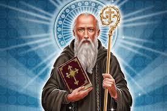

Principais Devoções
Nossa Senhora das Graças
.jpeg)
Nossa Senhora das Graças é um título da Virgem Maria, venerada pela Igreja Católica no dia 27 de novembro. É também conhecida como Nossa Senhora da Medalha Milagrosa.
Nossa Senhora Aperecida

Em 1717, três pescadores brasileiros encontraram no rio Paraíba do Sul, em São Paulo, uma imagem incompleta de Nossa Senhora da Conceição. Essa descoberta marcou o início de uma profunda devoção popular, que culminou na proclamação de Nossa Senhora Aparecida como a padroeira do Brasil.
Nossa Senhora Mãe Rainha

Schoenstatt é um movimento apostólico, uma família no coração da Igreja Católica. À sombra deste Santuário, desenvolveu-se um movimento de apostolado, de espiritualidade e de educação e surgiu assim uma vasta obra constituída por leigos, jovens, adultos e famílias, sacerdotes e várias comunidades de vida consagrada.
São Bento

São Bento nasceu em 480, filho de uma família nobre da cidade de Núrsia, na Itália, e irmão gêmea de Santa Escolástica. Ele foi beatificado por ter vencido duas armadilhas criadas pela Diabo para lhe destruir e, assim, enfraquecer a fé cristã.